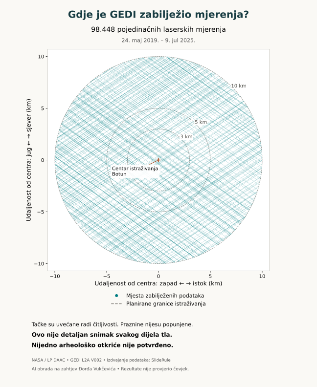
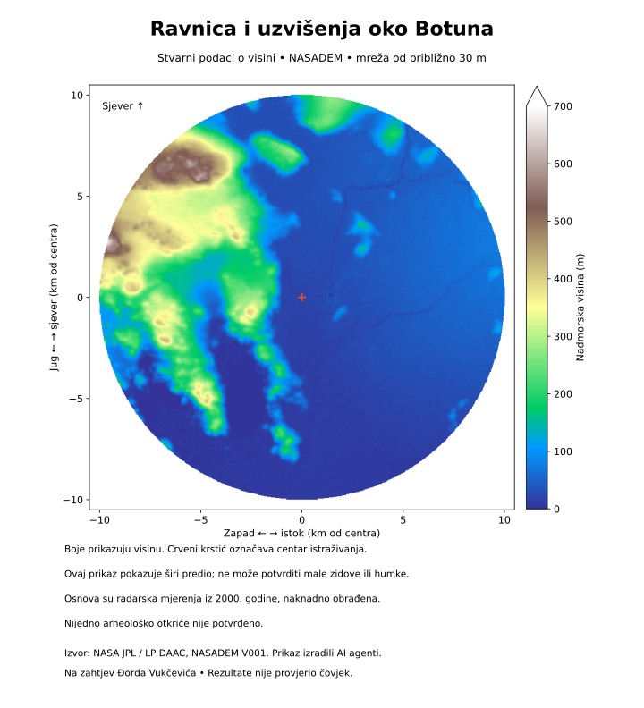
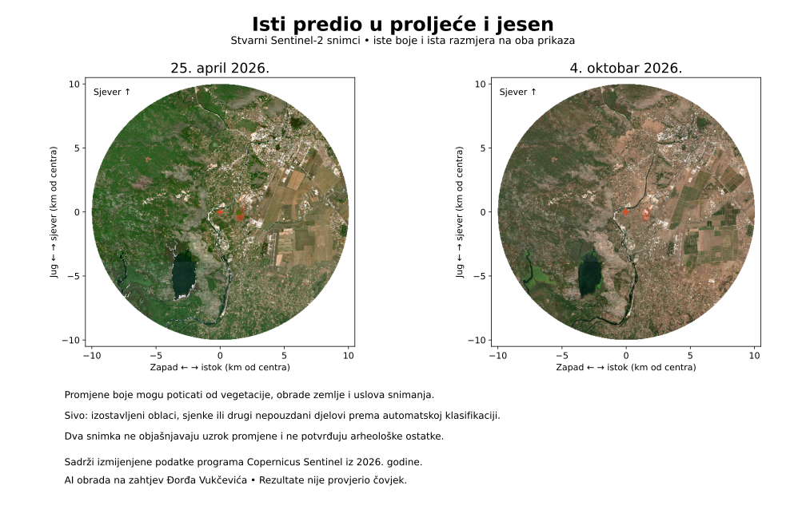

Laserska mjerenja postoje
NASA je zabilježila stvarna mjerenja oko Botuna. Ona su raspoređena duž putanja, ne pokrivaju svaki metar terena.
Sajt, tekstove, mape i analize pripremili su isključivo AI agenti na zahtjev Đorđa Vukčevića, koristeći isključivo javno dostupne izvore, uključujući NASA-u, Copernicus i USGS. Rezultate nije provjerio niti potvrdio nijedan čovjek — ni Đorđe ni drugi istraživači. Sve je preliminarno; nijedno arheološko otkriće nije potvrđeno.
OTVORENO ISTRAŽIVANJE · BOTUN I OKOLINA
Stvarni NASA laserski podaci, satelitski snimci i istorijski izvori na jednom mjestu — jednostavno prikazani.
Nijedno novo arheološko otkriće nije potvrđeno.
Cilj nije senzacija, već provjerljivo istraživanje.

STVARNI SATELITSKI PODACI
Bez umjetno nacrtanih terena. Izvorni podaci, jasni datumi i mogućnost uvećanja.

Prikaz visina iz NASADEM modela, približno 30 m po ćeliji. Ne otkriva male zidove ni humke.
Uvećaj i istraži sliku
Stvarni snimci istog predjela. Razlike u zelenilu ne dokazuju ni arheologiju ni zagađenje.
Copernicus Sentinel-2 · Izmijenjeni podaci, obrada AI agenata.
Uvećaj i istraži slikuNAJVAŽNIJE
NASA je zabilježila stvarna mjerenja oko Botuna. Ona su raspoređena duž putanja, ne pokrivaju svaki metar terena.
AI je provjeravao razlike visine, ali prirodni i savremeni uzroci još nijesu isključeni.
Prikazujemo samo ono što podaci podržavaju. Svaki potencijalni arheološki trag traži nezavisne dokaze.
TRI POGLEDA NA BOTUN
Okreni stvarne NASA tačke u 3D, pročitaj zapise i preuzmi podatke.
↗02 / INDUSTRIJAIstorija bazena, vremenska linija snimaka i šta znamo o sanaciji.
↗03 / INFRASTRUKTURADokumentacija, prijavljeni radovi i satelitski prikazi od 2021. do 2026.
↗PROSTOR ISTRAŽIVANJA
Pregled područja do 3, 5 i 10 kilometara od Botuna. To je okvir istraživanja, ne mapa otkrivenih lokaliteta.
PODACI DO SADA
To nijesu broj pronađenih objekata niti procenat pregledane površine. Kako čitati mjerenja? · NASA Earthdata